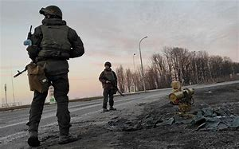

和平倡议
战争的阴影下，无数生命因冲突而失去，家园被摧毁，未来被打断。让我们共同呼吁和平，为了每一个因战争而破碎的生命与家庭，为了人类共同的未来。

对话与和平
战争从来不是解决问题的唯一途径。历史经验表明，即使在最深刻的分歧中，对话也能成为通向和平的桥梁。我们呼吁各方放下武器，回到谈判桌前，用外交手段而非战场上的伤亡来解决分歧。

人道主义援助
冲突区的平民正面临严重的人道主义危机。无论政治立场如何，我们都应关注那些处于战争阴影下的普通人。他们需要食物、药品、避难所和安全。国际社会应加大对平民的人道主义援助力度。

保护儿童
战争中最无辜的受害者是儿童。他们的教育被中断，身心健康受到威胁，甚至失去生命。我们必须特别关注战争对儿童的影响，确保他们得到保护，并为战后儿童心理创伤的修复提供支持。

国际合作
和平不仅是某一方的责任，而是国际社会共同的使命。我们呼吁各国政府、国际组织和民间社会加强合作，共同为停止冲突、促进和解创造条件，重建被战争摧毁的社区。

重建家园
当战争的硝烟散去，摆在人们面前的是重建的艰巨任务。学校、医院、住宅和基础设施需要重建，但更重要的是心灵的重建。国际社会应支持战后重建，帮助人们重拾希望，重建家园。